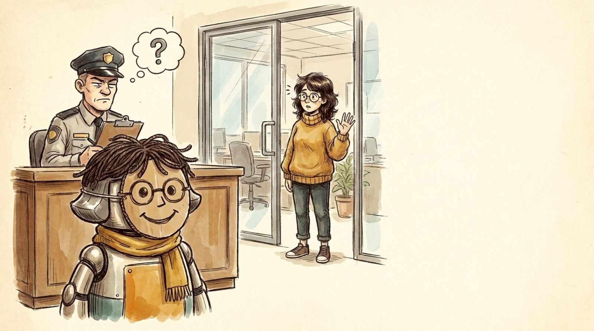

<section id="x02" data-transition="fade" style="background:#F5EEE0;color:#222222;font-family:Arial, Helvetica, sans-serif">

<p style="position:absolute;left:1340px;top:380px;width:520px;font-size:32px;font-weight:700;color:#C88A14">4</p>
<h1 style="position:absolute;left:1340px;top:430px;width:520px;font-size:56px;font-weight:700;color:#222222;line-height:1.1">Agent vs. human</h1>
<p style="position:absolute;left:1340px;top:510px;width:520px;font-size:32px;color:#4A4A4A;line-height:1.3">Every system needs to know who is really acting</p>
<aside>Today an agent runs with my credentials, my tokens, my SSH keys. To every system it IS me. That breaks every permission model we just talked about: the layers only work if the system can tell whether a human or an agent is asking, and which human sent that agent. Agents need their own identities, scoped down from the human's, and every action logged as "agent acting on behalf of Maya."</aside>
</section>
